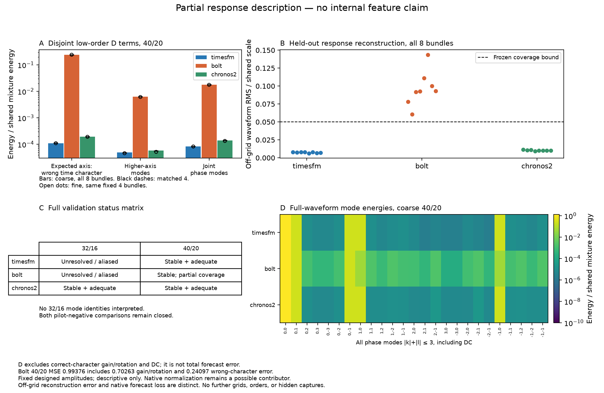

Partial coverage; no internal feature claim. Only stable40/20 low-order identities described;32/16 shown as validation status only.
Finite-window phase-dependent native preprocessing can itself create modes. These are native forecast responses,not an assigned transformer/normalization cause.

Per-bundle theoretical shared mixture energy (a²+b²)/2;means over fixed designed amplitude bundles,not population estimates;no p-values or CIs
| Model | D | Native MSE | Offgrid unexplained energy | Coverage |
|---|---|---|---|---|
| timesfm | 0.000242895 | 0.00044476 | 5.54194e-05 | 8/8 |
| bolt | 0.264945 | 0.993759 | 0.00980969 | 0/8 |
| chronos2 | 0.000393383 | 0.000871296 | 0.00010925 | 8/8 |
D excludes correct-character gain/rotation and DC, so 90.95% of D is not 90.95% of total forecast error. Bolt 40/20 total normalized MSE is 0.99376, including 0.70263 gain/rotation error and 0.24097 wrong-character error.
Offgrid unexplained energy measures reconstruction of native forecasts at OTHER phases;it is not an additive part of native true-future MSE.
All phase orders are retained here. These four disjoint error groups sum to native true-future MSE; off-grid reconstruction error is separate.
| Model | Expected-axis shape/gain error | Higher-axis error | Joint error | Phase-DC error |
|---|---|---|---|---|
| timesfm | 0.000141834 | 5.30812e-05 | 0.000122662 | 0.000127182 |
| bolt | 0.943601 | 0.00646561 | 0.0257334 | 0.0179583 |
| chronos2 | 0.000545339 | 6.17014e-05 | 0.000220493 | 4.37619e-05 |
| Model | Term | Coarse, all 8 | Coarse, matched 4 | Fine, same 4 |
|---|---|---|---|---|
| timesfm | expected_axis_wrong_time | 0.000110011 | 0.000112166 | 0.000109729 |
| timesfm | higher_axis | 4.95625e-05 | 4.87301e-05 | 4.60883e-05 |
| timesfm | joint | 8.33217e-05 | 8.35467e-05 | 8.26363e-05 |
| bolt | expected_axis_wrong_time | 0.24097 | 0.240566 | 0.241489 |
| bolt | higher_axis | 0.00622543 | 0.00631331 | 0.00612219 |
| bolt | joint | 0.0177493 | 0.0177443 | 0.0176513 |
| chronos2 | expected_axis_wrong_time | 0.00019455 | 0.000193999 | 0.000192103 |
| chronos2 | higher_axis | 5.79619e-05 | 5.71822e-05 | 5.18742e-05 |
| chronos2 | joint | 0.000140871 | 0.000141363 | 0.000134101 |
| Model | Mode | Group | Predicted energy, coarse8 bundles | D contribution, coarse8 | D, coarse matched4 | D, fine4 |
|---|---|---|---|---|---|---|
| timesfm | (0, 0) | phase_DC | 1.31742 | 0 | 0 | 0 |
| timesfm | (0, 1) | expected_axis_shape | 0.249042 | 3.00867e-05 | 3.08968e-05 | 2.9845e-05 |
| timesfm | (0, 2) | higher_axis | 1.042e-05 | 1.042e-05 | 1.02813e-05 | 1.04075e-05 |
| timesfm | (0, 3) | higher_axis | 5.2657e-06 | 5.2657e-06 | 4.98547e-06 | 3.9813e-06 |
| timesfm | (0, -3) | higher_axis | 5.2657e-06 | 5.2657e-06 | 4.98547e-06 | 3.9813e-06 |
| timesfm | (0, -2) | higher_axis | 1.042e-05 | 1.042e-05 | 1.02813e-05 | 1.04075e-05 |
| timesfm | (0, -1) | expected_axis_shape | 0.249042 | 3.00867e-05 | 3.08968e-05 | 2.9845e-05 |
| timesfm | (1, 0) | expected_axis_shape | 0.250771 | 2.49188e-05 | 2.51863e-05 | 2.50198e-05 |
| timesfm | (1, 1) | joint | 1.07835e-05 | 1.07835e-05 | 1.08589e-05 | 1.07137e-05 |
| timesfm | (1, 2) | joint | 5.03554e-06 | 5.03554e-06 | 5.12594e-06 | 4.74785e-06 |
| timesfm | (1, -2) | joint | 8.71122e-06 | 8.71122e-06 | 8.65403e-06 | 8.52829e-06 |
| timesfm | (1, -1) | joint | 1.11135e-05 | 1.11135e-05 | 1.12052e-05 | 1.13261e-05 |
| timesfm | (2, 0) | higher_axis | 6.63645e-06 | 6.63645e-06 | 6.59579e-06 | 6.34742e-06 |
| timesfm | (2, 1) | joint | 2.20747e-06 | 2.20747e-06 | 2.08852e-06 | 2.21214e-06 |
| timesfm | (2, -1) | joint | 3.80964e-06 | 3.80964e-06 | 3.84072e-06 | 3.79e-06 |
| timesfm | (3, 0) | higher_axis | 2.45907e-06 | 2.45907e-06 | 2.50249e-06 | 2.30786e-06 |
| timesfm | (-3, 0) | higher_axis | 2.45907e-06 | 2.45907e-06 | 2.50249e-06 | 2.30786e-06 |
| timesfm | (-2, 0) | higher_axis | 6.63645e-06 | 6.63645e-06 | 6.59579e-06 | 6.34742e-06 |
| timesfm | (-2, 1) | joint | 3.80964e-06 | 3.80964e-06 | 3.84072e-06 | 3.79e-06 |
| timesfm | (-2, -1) | joint | 2.20747e-06 | 2.20747e-06 | 2.08852e-06 | 2.21214e-06 |
| timesfm | (-1, 0) | expected_axis_shape | 0.250771 | 2.49188e-05 | 2.51863e-05 | 2.50198e-05 |
| timesfm | (-1, 1) | joint | 1.11135e-05 | 1.11135e-05 | 1.12052e-05 | 1.13261e-05 |
| timesfm | (-1, 2) | joint | 8.71122e-06 | 8.71122e-06 | 8.65403e-06 | 8.52829e-06 |
| timesfm | (-1, -2) | joint | 5.03554e-06 | 5.03554e-06 | 5.12594e-06 | 4.74785e-06 |
| timesfm | (-1, -1) | joint | 1.07835e-05 | 1.07835e-05 | 1.08589e-05 | 1.07137e-05 |
| bolt | (0, 0) | phase_DC | 1.25227 | 0 | 0 | 0 |
| bolt | (0, 1) | expected_axis_shape | 0.241085 | 0.0785964 | 0.0784786 | 0.0787062 |
| bolt | (0, 2) | higher_axis | 0.00132766 | 0.00132766 | 0.00133264 | 0.00133816 |
| bolt | (0, 3) | higher_axis | 0.000485549 | 0.000485549 | 0.000522062 | 0.000474601 |
| bolt | (0, -3) | higher_axis | 0.000485549 | 0.000485549 | 0.000522062 | 0.000474601 |
| bolt | (0, -2) | higher_axis | 0.00132766 | 0.00132766 | 0.00133264 | 0.00133816 |
| bolt | (0, -1) | expected_axis_shape | 0.241085 | 0.0785964 | 0.0784786 | 0.0787062 |
| bolt | (1, 0) | expected_axis_shape | 0.0470207 | 0.0418885 | 0.0418043 | 0.0420384 |
| bolt | (1, 1) | joint | 0.00216246 | 0.00216246 | 0.00217234 | 0.00215467 |
| bolt | (1, 2) | joint | 0.000726267 | 0.000726267 | 0.000727648 | 0.00069684 |
| bolt | (1, -2) | joint | 0.00221404 | 0.00221404 | 0.00222545 | 0.00224016 |
| bolt | (1, -1) | joint | 0.00121864 | 0.00121864 | 0.00120907 | 0.00120847 |
| bolt | (2, 0) | higher_axis | 0.00111781 | 0.00111781 | 0.00111559 | 0.00109869 |
| bolt | (2, 1) | joint | 0.000452204 | 0.000452204 | 0.000447123 | 0.00044229 |
| bolt | (2, -1) | joint | 0.00210106 | 0.00210106 | 0.00209053 | 0.00208321 |
| bolt | (3, 0) | higher_axis | 0.000181695 | 0.000181695 | 0.000186372 | 0.000149652 |
| bolt | (-3, 0) | higher_axis | 0.000181695 | 0.000181695 | 0.000186372 | 0.000149652 |
| bolt | (-2, 0) | higher_axis | 0.00111781 | 0.00111781 | 0.00111559 | 0.00109869 |
| bolt | (-2, 1) | joint | 0.00210106 | 0.00210106 | 0.00209053 | 0.00208321 |
| bolt | (-2, -1) | joint | 0.000452204 | 0.000452204 | 0.000447123 | 0.00044229 |
| bolt | (-1, 0) | expected_axis_shape | 0.0470207 | 0.0418885 | 0.0418043 | 0.0420384 |
| bolt | (-1, 1) | joint | 0.00121864 | 0.00121864 | 0.00120907 | 0.00120847 |
| bolt | (-1, 2) | joint | 0.00221404 | 0.00221404 | 0.00222545 | 0.00224016 |
| bolt | (-1, -2) | joint | 0.000726267 | 0.000726267 | 0.000727648 | 0.00069684 |
| bolt | (-1, -1) | joint | 0.00216246 | 0.00216246 | 0.00217234 | 0.00215467 |
| chronos2 | (0, 0) | phase_DC | 1.32358 | 0 | 0 | 0 |
| chronos2 | (0, 1) | expected_axis_shape | 0.239102 | 6.12722e-05 | 6.09568e-05 | 5.98927e-05 |
| chronos2 | (0, 2) | higher_axis | 1.08669e-05 | 1.08669e-05 | 1.0821e-05 | 1.04408e-05 |
| chronos2 | (0, 3) | higher_axis | 5.90578e-06 | 5.90578e-06 | 5.69131e-06 | 4.96691e-06 |
| chronos2 | (0, -3) | higher_axis | 5.90578e-06 | 5.90578e-06 | 5.69131e-06 | 4.96691e-06 |
| chronos2 | (0, -2) | higher_axis | 1.08669e-05 | 1.08669e-05 | 1.0821e-05 | 1.04408e-05 |
| chronos2 | (0, -1) | expected_axis_shape | 0.239102 | 6.12722e-05 | 6.09568e-05 | 5.98927e-05 |
| chronos2 | (1, 0) | expected_axis_shape | 0.252571 | 3.60028e-05 | 3.60428e-05 | 3.61586e-05 |
| chronos2 | (1, 1) | joint | 9.36326e-06 | 9.36326e-06 | 9.59735e-06 | 9.01568e-06 |
| chronos2 | (1, 2) | joint | 9.42917e-06 | 9.42917e-06 | 9.4575e-06 | 9.08136e-06 |
| chronos2 | (1, -2) | joint | 1.20025e-05 | 1.20025e-05 | 1.21546e-05 | 1.11851e-05 |
| chronos2 | (1, -1) | joint | 1.14564e-05 | 1.14564e-05 | 1.11423e-05 | 1.11409e-05 |
| chronos2 | (2, 0) | higher_axis | 6.06278e-06 | 6.06278e-06 | 6.14643e-06 | 5.62018e-06 |
| chronos2 | (2, 1) | joint | 6.12152e-06 | 6.12152e-06 | 6.41949e-06 | 5.25495e-06 |
| chronos2 | (2, -1) | joint | 2.20627e-05 | 2.20627e-05 | 2.19101e-05 | 2.13725e-05 |
| chronos2 | (3, 0) | higher_axis | 6.14547e-06 | 6.14547e-06 | 5.93235e-06 | 4.90917e-06 |
| chronos2 | (-3, 0) | higher_axis | 6.14547e-06 | 6.14547e-06 | 5.93235e-06 | 4.90917e-06 |
| chronos2 | (-2, 0) | higher_axis | 6.06278e-06 | 6.06278e-06 | 6.14643e-06 | 5.62018e-06 |
| chronos2 | (-2, 1) | joint | 2.20627e-05 | 2.20627e-05 | 2.19101e-05 | 2.13725e-05 |
| chronos2 | (-2, -1) | joint | 6.12152e-06 | 6.12152e-06 | 6.41949e-06 | 5.25495e-06 |
| chronos2 | (-1, 0) | expected_axis_shape | 0.252571 | 3.60028e-05 | 3.60428e-05 | 3.61586e-05 |
| chronos2 | (-1, 1) | joint | 1.14564e-05 | 1.14564e-05 | 1.11423e-05 | 1.11409e-05 |
| chronos2 | (-1, 2) | joint | 1.20025e-05 | 1.20025e-05 | 1.21546e-05 | 1.11851e-05 |
| chronos2 | (-1, -2) | joint | 9.42917e-06 | 9.42917e-06 | 9.4575e-06 | 9.08136e-06 |
| chronos2 | (-1, -1) | joint | 9.36326e-06 | 9.36326e-06 | 9.59735e-06 | 9.01568e-06 |
{
"source_paths": {
"alias_results": "tsfm_lens/runs/feature_search_stage49_phase_alias3500000/results.json",
"alias_protocol": "tsfm_lens/runs/feature_search_stage49_phase_alias3500000/protocol.json"
},
"source_hashes": {
"alias_results": "14b4c44948659321792f7f4bfca8347d7f79583f10232c0c8476a674359b0a17",
"alias_protocol": "9c7eb8871ad3cf3569988c4db4926985f70a9b57b39d91d5f5976d10ec508c64",
"coarse_metadata": "a9b3722ca4a163d9e51270eb0fdb81d00dfb9ab6d1fe5f8b10c4ccb3ac1f6293",
"new_metadata": "942bf7dbae99dea935e273a8db87d1a17a856e1a2268f2d204e130d8f06e946f",
"driver": "e7697e570c3e2e556a19d2aa1b8da4961bea7442bc87f9a12e56ab5a612b5b5f"
},
"forecast_bindings": {
"timesfm": {
"coarse_forecast_sha256": "6d3e364f066229d2eb181dc74cf1d06b754a0101ce0c810c017e24643094c3a3",
"new_forecast_sha256": "1bef78b906afe149be69f05ad2f2d07e6d6156da5425b297b95ab39ae9498ae0"
},
"bolt": {
"coarse_forecast_sha256": "eb6c7e776de0e6a74e40de6163dba9110988d3847af64a7fc067665a9b2c6000",
"new_forecast_sha256": "91599907a18691ea5102501aa94e7030a8a22e7157a1405bf9a16b70ef056ebd"
},
"chronos2": {
"coarse_forecast_sha256": "21166da57795d4842e4f3d642f63aa95e58c37e789715b7c66f600d7e70ff660",
"new_forecast_sha256": "d3b36cbf267a8f0751d96f6e8dbf718baa8201fc0542108b12cc3d0805690523"
}
}
}